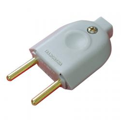
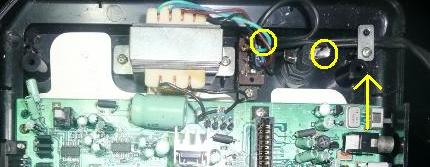
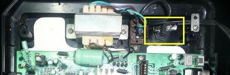
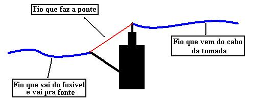

Mega Drive - Mega 3 não liga. Fusivel?
 :::. Por Gigacom
- Quem sempre morou em capital ou em cidade grande, pode nem
imaginar a dificuldade que existe em se encontrar componentes
eletrônicos no interior, quem dirá para consertar video
games antigos. Veja mais uma dica do tio Giga para arrumar o Meguinha
sem gastar dinheiro!
:::. Por Gigacom
- Quem sempre morou em capital ou em cidade grande, pode nem
imaginar a dificuldade que existe em se encontrar componentes
eletrônicos no interior, quem dirá para consertar video
games antigos. Veja mais uma dica do tio Giga para arrumar o Meguinha
sem gastar dinheiro!
_________________________________________________________________________________
Uma das coisas que mais legais nos Mega Drive 3, é que a maioria já vem com a fonte instalada internamente. Não sei bem de quem foi a idéia, mas até onde eu sei, isso só foi aplicado nos Mega Drive 3 fabricados pela Tec Toy, lembrando que aqueles MD3 da TT que possuem fontes externas, na verdade são os Genesis 2 importados pela TT e adaptados ao mercado brasileiro.
Outra coisa legal desses Megas, é que há um fusivel embutido no console que protege todo o sistema da fonte interna. Não raro, esse fusivel vai pros côco por algum motivo qualquer, mas substituindo-o (o que não é nada complicado de se fazer) a coisa toda volta a funcionar normalmente. Porém, há alguns detalhes nessa fonte que, mesmo com a troca do fusivel, o console ainda assim não irá ligar. Os principais motivos e soluções são:
Cabo de energia
Infelizmente, o cabinho de energia do Mega 3 é uma porcaria, ele arrebenta facil principalmente na parte da tomada. Ha duas coisas que se pode fazer:
1 - Substituir a tomada do cabo - facim facim, compre uma tomada para extensão, corte a tomada com defeito, parafuse os fios em cada ponto da tomada nova, e vá jogar!

Um plug de tomada simples como esse pode
trazer a vida ao seu Mega Drive 3
2 - Substituir o cabo - se você é mais hardcore, compre um par de fios de 1,5mm, dessolde o fio antigo que está dentro do console, solde o novo cabo. Veja a foto:

Os círculos amarelos indicam onde o cabo de energia está soldado originalmente. Remova as soldas, desparafuse a plaquinha de metal que prende o cabo velho (veja a seta) e solde o novo cabo de energia nos mesmos locais onde estava oantigo.
Ponte rompida
Outro problema que pode fazer com que o console não ligue é o rompimento de um mísero fiozinho que liga os pontos entre o cabo de energia e a saída do fusivel. Esse fiozinho é fino mesmo, quase ninguem o nota quando vai abrir o MD3, e não raro ele se rompe até sozinho. Esse fio faz o que chamamos de ponte.

Na foto acima, o destaque para o local onde fica o fio. Para resolver esse problema, solde outro fio ali unindo esses pontos formando uma nova ponte, conforme ilustração abaixo:

Normalmente é isso o que ocorre quando o MD3 não liga. São problemas simples de se resolver, não exigindo muita coisa de qualquer um que seja.Duvidas, reclamações, sugestões de amor... já sabem, acessem o Trombone!
Acesse o Trombone e comente sobre essa matéria!


Aqui, vou apresentar a restauração de um controle de SNES que comprei em péssimo estado numa feirinha da minha cidade, e que agora está lindinho funcionando perfeitamente. Confira as dicas, e faça uma restauração você também
Restaurando um controle de PSX
Peguei o mais feinho e judiado dos controles para fazer esse artigo. O coitado estava encardido na parte de cima, e debaixo dele encontrei arranhões nas partes de apoio da mão, e bastante sujeira acumulada nas inscrições. O conector do cabo estava muito arranhado e sujo tambem, o cabo então nem se fala... sujava a mão só de pegar